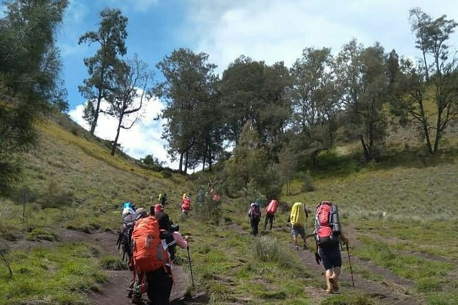
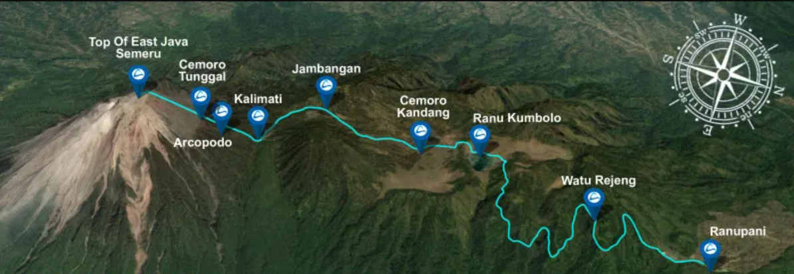

Surganya Gunung Semeru, Kamu Wajib Datang Kesini.
Ranu Kumbolo adalah sebuah danau yang terletak di Pegunungan Tengger, kaki Gunung Semeru, Kecamatan Senduro, Kabupaten Lumajang, Provinsi Jawa Timur.
Danau ini merupakan bagian dari Taman Nasional Bromo Tengger Semeru dan berada di ketinggian 2.400 meter di atas permukaan laut (mdpl).
Danau ini cukup cantik dengan pemandangan alamnya yang sangat memesona. Bagi para pecinta alam, serta para backpacker, Ranu Kumbolo bukanlah tempat yang asing.
Hal tersebut lantaran danau ini juga berfungsi sebagai tempat transit, baik bagi para pendaki yang ingin menuju Mahameru, Puncak Semeru maupun bagi para pendaki yang turun dari Mahameru.
Danau ini sangat cocok sebagai tempat melepas penat sambil melihat indahnya pemandangan matahari terbit maupun matahari terbenam dari sudut danau.
Diketahui jika sebelumnya danau ini merupakan bagian dari kawasan konservasi Taman Nasional Bromo Tengger Semeru (TNBTS) dan memiliki kekayaan hayati yang cukup besar baik flora maupun fauna.
Sehingga untuk menjaga keasliannya agar tidak rusak, ada beberapa peraturan yang harus ditaati oleh para pendaki atau siapapun yang berkunjung ke danau ini.
Bukit Cinta di Ranu Kumbolo

Di samping Ranu Kumbolo ada suatu bukit yang dinamakan ”Bukit Cinta” yang konon jika kita mendaki ke bukit ini dengan memikirkan orang yang kita cintai dengan tidak menoleh kebelakang maka kita dapat bahagia bersamanya.
Tetapi makin tinggi kita mendaki jadi makin hebat juga godaannya. Lantaran makin tinggi, jadi panorama Ranu Kumbolo dari bukit bakal tampak makin indah.
Pesona Ranu Kumbolo
Danau Ranu Kumbolo merupakan “Surga Gunung Semeru”. Hal tersebut lantaran keindahan pesona alam yang ditawarkan sangat mempesona.
Air danau yang kebiruan mengundang siapapun untuk segera turun dan menikmati tenangnya suasanya disana. Udara yang dingin merupakan hidangan wajib disajikan Ranu Kumbolo.
Sunrise adalah momen special untuk ditunggu di Ranu Kumbolo. Saat sinar jingga matahari mengusir kabut tebal yang menyelimuti permukaan Ranu Kumbolo,
kabut yang mulai menipis, itu pertanda bagi pendaki untuk melanjutkan perjalanan. Dengan luas sekitar 14 ha, danau Ranu Kumbolo merupakan sumber air yang melimpah.
Melimpahnya air ini berdampak pada kebutuhan para pendaki. Air adalah sesuatu yang sangat penting dalam kegiatan pendakian.
Rute Menuju Ranu Kumbolo

Rute paling umum dan sering digunakan adalah melalui Kecamatan Lumajang, Kabupaten Lumajang, yang dikenal sebagai jalur Ranu Pani.
Pendakian dimulai dari pos pendakian di Desa Ranu Pani. Rute ini juga menyediakan fasilitas berupa pos-pos pendakian, tempat peristirahatan, dan penginapan.
Rute ini memiliki pemandangan yang indah dan memanjakan mata para pendaki. Selama perjalanan, pendaki akan melewati danau-danau indah seperti Ranu Kumbolo dan Ranu Darungan.
Selain itu, pendaki juga akan melewati padang rumput yang luas dan hutan pinus yang menakjubkan. Selama musim tertentu, pendaki juga dapat menyaksikan bunga edelweiss yang tumbuh di sekitar jalur pendakian.